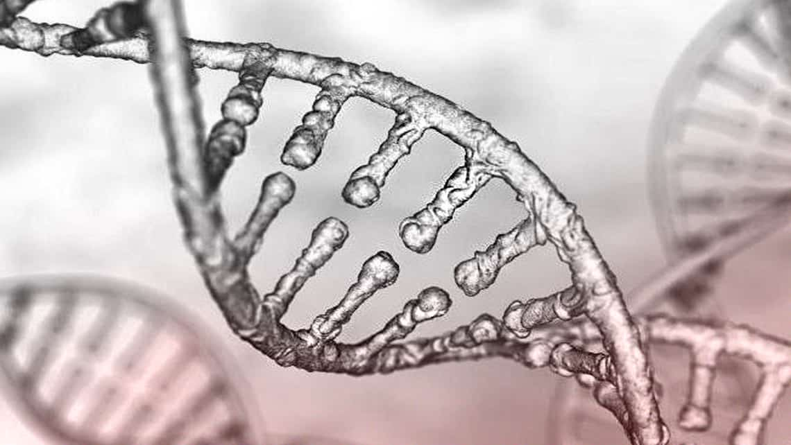
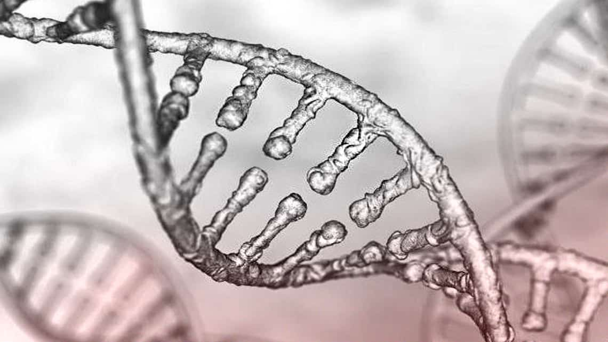
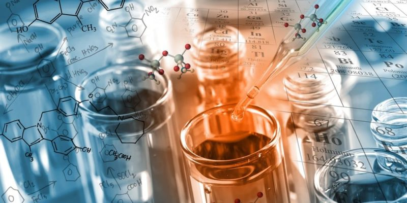

🔬 ¿Qué es la Química?
La química es una ciencia que estudia la materia, su composición, estructura, propiedades y los cambios que experimenta durante las reacciones químicas. A través de la química, se explica por qué ocurren ciertos fenómenos en la naturaleza, como la formación del óxido en el hierro, la fermentación o la digestión de los alimentos.
La química se divide en varias ramas, entre ellas:
- Química orgánica: Estudia los compuestos con carbono.
- Química inorgánica: Analiza sustancias sin carbono, como minerales y metales.
- Química física: Estudia la energía y los cambios físicos de la materia.
- Química analítica: Se enfoca en identificar los componentes de las sustancias.
- Bioquímica: Estudia las reacciones químicas en los organismos vivos.
⚛️ Estados de la Materia
La materia puede encontrarse en diferentes estados físicos, dependiendo de la temperatura y presión. Estos estados son:
- Sólido: Tiene forma y volumen definidos. Las partículas están muy unidas y apenas se mueven. Ejemplo: hielo, madera.
- Líquido: Tiene volumen constante pero adopta la forma del recipiente. Las partículas se mueven más libremente. Ejemplo: agua, aceite.
- Gaseoso: No tiene forma ni volumen fijos. Las partículas están muy separadas y se mueven rápidamente. Ejemplo: oxígeno, dióxido de carbono.
- Plasma: Es un gas ionizado con alta energía, común en el Sol y otros astros. Ejemplo: el interior de las estrellas y los rayos.
🧪 Propiedades de la Materia
Las propiedades de la materia permiten identificar y distinguir diferentes sustancias. Se dividen en:
- Propiedades generales: Son comunes a toda materia. Incluyen masa, volumen, peso, densidad e inercia.
- Propiedades específicas: Permiten diferenciar sustancias. Incluyen:
- Densidad: Relación entre masa y volumen.
- Punto de fusión: Temperatura a la que una sustancia pasa de sólido a líquido.
- Conductividad: Capacidad de transmitir calor o electricidad.
- Solubilidad: Capacidad de disolverse en un líquido.
🔄 Cambios Físicos y Químicos
La materia puede sufrir transformaciones que se clasifican en:
- Cambios físicos: No alteran la composición de la materia, solo su forma o estado. Ejemplo: derretir mantequilla, congelar agua.
- Cambios químicos: Transforman la materia en una nueva sustancia con propiedades diferentes. Ejemplo: quemar papel, oxidación de metales.
Los cambios físicos son reversibles en muchos casos, mientras que los químicos generalmente no lo son.
⚗️ Reacciones Químicas
Una reacción química ocurre cuando una o más sustancias (reactivos) se transforman en otras nuevas (productos). Estas reacciones implican la ruptura y formación de enlaces entre átomos.
Ejemplos comunes incluyen:
- Combustión: Reacción con oxígeno que libera energía. Ejemplo: combustión de gasolina.
- Neutralización: Reacción entre un ácido y una base. Ejemplo: vinagre (ácido) + bicarbonato (base).
- Oxidación: Reacción con oxígeno que forma óxidos. Ejemplo: óxido de hierro en el metal.
Las reacciones pueden ser exotérmicas (liberan calor) o endotérmicas (absorben calor).